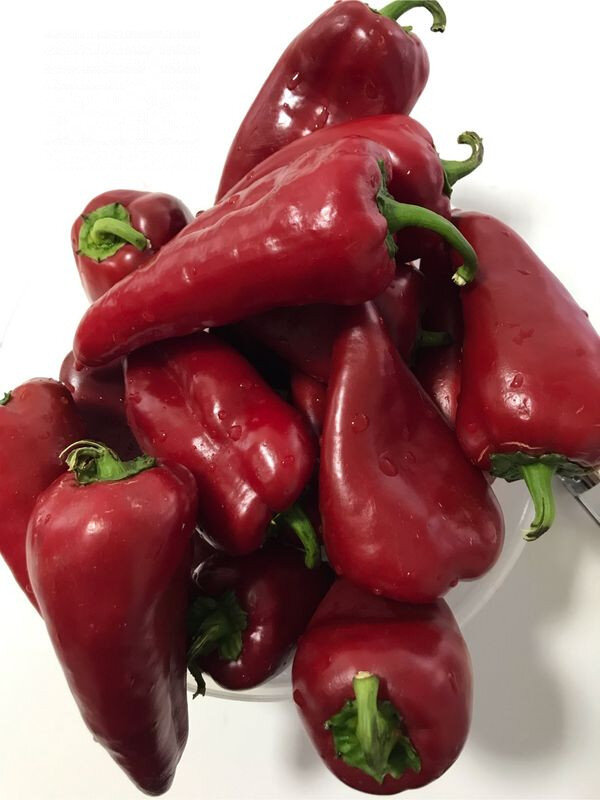

🍽️ 8-10 kişilik⏱️ Hazırlık: 20 dk🔥 Pişirme: 30 dk🏷️ Dolma-Sarma Tarifleri
Malzemeler
- 20 adet kırmızı kapya biber
- 20 kaşık pirinç
- 1 fincan zeytinyağı
- 1 soğan
- 2 domates
- Yarım kaşık salça
- Taze veya kuru nane
- 1 çay kaşığı karabiber
- 1 çay kaşığı pulbiber
- Tuz
Hazırlanışı
- Biberler yıkanıp dolmalık hazırlıyoruz. Pirinci ayıklayıp yıkıyoruz. Domates ve soğanı rendeliyoruz.
- Pirince; domates, soğan, zeytinyağı, tuz, salça ve baharatları ilave ederek karıştırıyoruz.
- Biberlerin içine harcımızdan biberin yarısından az fazlasına dolduruyoruz.
- Çıkardığımız biber saplarını veya domatesten hazırladığımız kapaklarla kapatıyoruz.
- Fırın tepsisine yerleştiriyoruz. 200 derecede fırını açıyoruz.
- Su kaynatıp dolmaların yarısını geçecek şekilde tepsiye döküyoruz.
- Üzerleri biraz kızarınca biberleri ters çeviriyoruz.
- Biberlerin üzeri kızarınca fırını kapatıp demlenmeye bırakıyoruz. Nefis dolmamız servise hazır. Afiyet olsun 😊.